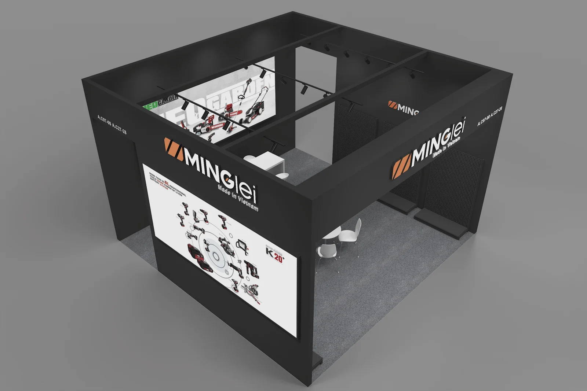
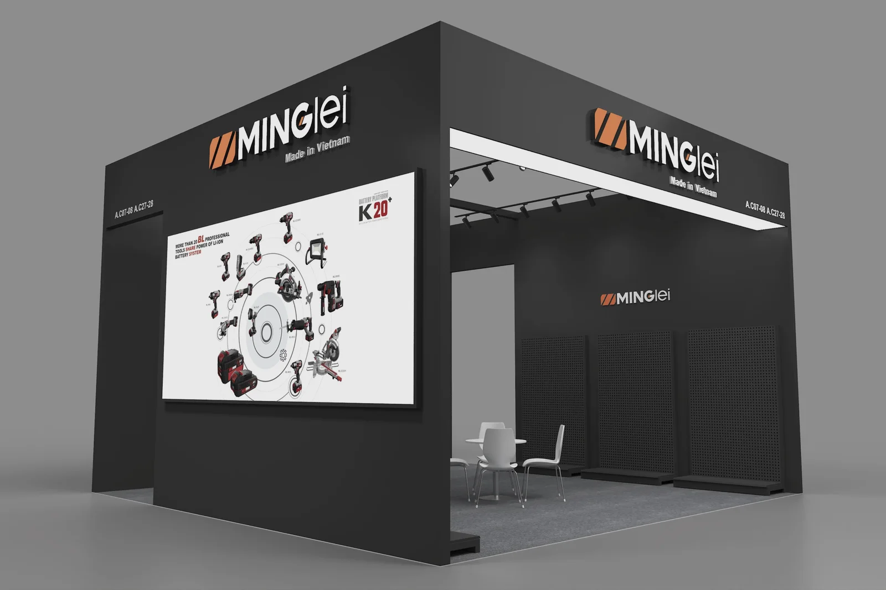
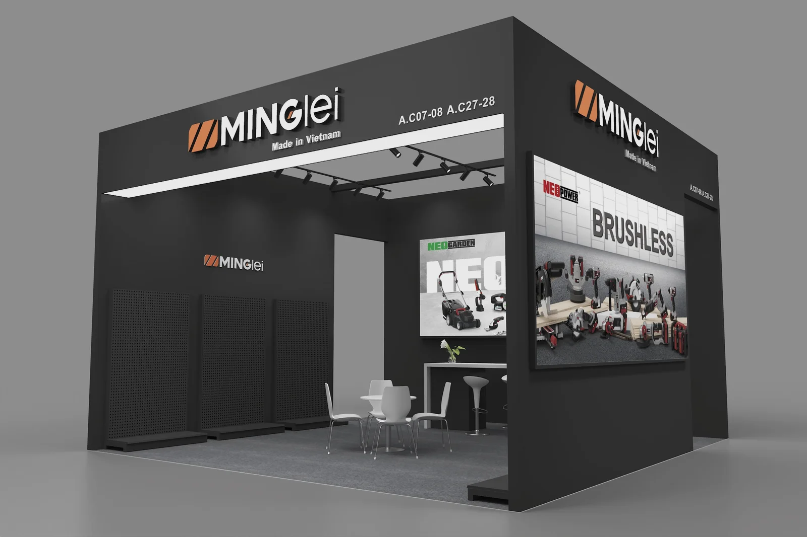
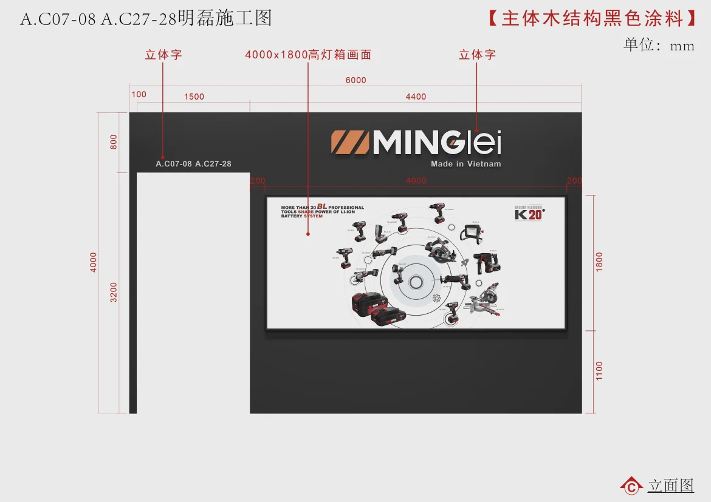

BRAND IMPACT & SPATIAL COMPOSITION
A dark architectural frame turns the tool brand into a focused exhibition presence, combining illuminated identity, large product graphics and an open hospitality zone.
深色建筑框架将工具品牌转化为聚焦的展览形象，结合发光标识、大幅产品图形与开放洽谈区。
Khung kiến trúc tối màu tạo nên hình ảnh triển lãm tập trung cho thương hiệu dụng cụ, kết hợp nhận diện phát sáng, đồ họa sản phẩm lớn và khu tiếp khách mở.
DARK FRAME, CLEAR IDENTITY
The restrained black volume gives the product imagery and orange logo a precise hierarchy. Openings on multiple sides maintain access without weakening the strong façade.
克制的黑色体量为产品图像与橙色标识建立清晰层级，多侧开口保持通行，同时不削弱强烈的品牌界面。
Khối màu đen tiết chế tạo thứ bậc rõ ràng cho hình ảnh sản phẩm và logo cam. Các mặt mở duy trì khả năng tiếp cận mà vẫn giữ được mặt tiền mạnh mẽ.





